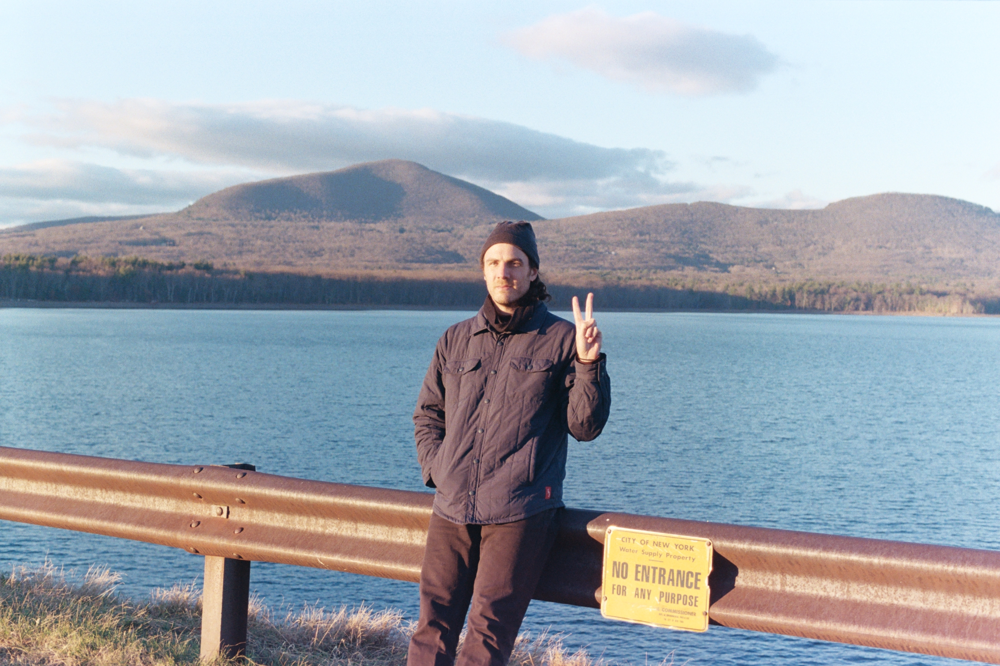

LA016 & MR055: Post Moves & The Sound Memory Ensemble - "Recall the Dream Breath"
Release: 01/20/22

I recorded the album after a conversation with Caleb about doing an album for the label and talking through ideas of what it could look like - compared to my previous release, Heart Music (2022, Where to Now? Records), which was written and recorded over 1-1.5 yrs, Recall the Dream Breath was written and recorded within the span of 2 weeks in March 2021. Heart Music was written in quarantine more or less, so that album became very dense as I wasn't too concerned with thinking about how to perform it live. I really wanted to strip things down for Recall and to see if I could similarly create thoughtful and inviting worlds for the listener, but with a more simple sound palette (pedal steel, drums, bass, banjo for the most part). After the careful deliberations and constructions of Heart Music, this album somehow felt freer and looser (more like 1st idea is the best idea). The first two tracks are more thoroughly "composed" pieces and for me, highlight new approaches for how I am writing music for the pedal steel. The 2nd half of "Lorraine's" and the final three songs were more or less improvised/written while recording. So I kind of hear the album in this sorta reflective way, Side A & B of similar palettes, but with some different intentions behind them. The other kicker with this album is the collaborations with fellow Moone artists Kyle Field & John Dieterich, two people I have looked up to for a while. When talking with Caleb, he asked about having Moone artists on the album, and it worked out to have Kyle & John contribute (Kyle writing and speaking the poem "Lorraine's" and John adding guitar & effects to "Electric Pasture". These contributions made me feel ever more part of the Moone orbit, especially after playing on Caleb's solo album this past year. For that reason, I also had in my mind the image of an imaginary group or collective performing this music. The album is attributed to "Post Moves & the Sound Memory Ensemble". Though I am performing most of the instrumentation (aside from Kyle & John's contributions) - I wanted a listener to perhaps get the feeling that there was a larger group at work. With the album title and name of the ensemble, both have an associated verb/action with them. Both concerning dreams and/or memories, I liked the idea of the music scoring these moments where we cue information culled from dreams/memories as a way of situating ourselves in our present state. The placelessness of memories and their role in us finding place in the present. more info about Post Moves can be found at: samwenc.com

RIYL: Susan Alcorn, Jim O'Rourke, Oren Ambarchi
Format: LP / DIG
Bio
Links: